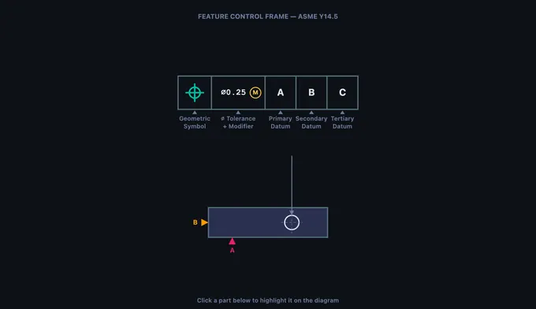

GD&T Symbols Chart & Trainer
ASME Y14.5 geometric tolerancing — Learn • Explore • Practice • Quiz
Parts of a Feature Control Frame
Click any part below to highlight it on the diagram above.
Σ Five GD&T categories — what each tolerance type controls
- Form — Flatness, Straightness, Circularity, Cylindricity. Controls shape of a single feature. No datum required.
- Orientation — Perpendicularity, Angularity, Parallelism. Tilt or angle of a feature relative to a datum.
- Location — Position, Concentricity, Symmetry. Where the feature must be located relative to a datum reference frame.
- Profile — Profile of a Line, Profile of a Surface. Uniform tolerance band around an ideal 2D or 3D shape.
- Runout — Circular Runout, Total Runout. Full Indicator Movement (FIM) as part rotates about a datum axis.
Ⓞ Material condition modifiers — MMC, LMC, RFS
- Ⓜ (MMC) — Maximum Material Condition. Bonus tolerance applies as the feature departs from MMC (smallest hole, largest pin).
- Ⓝ (LMC) — Least Material Condition. Bonus tolerance applies as the feature departs from LMC.
- RFS — Regardless of Feature Size (implied when no modifier). No bonus tolerance.
- Ⓣ (Projected) — Tolerance zone extends above the feature, useful for fastener interfaces.
⨀ Datum reference frame — 6 degrees of freedom locked by 3 datums
Primary datum constrains 3 DOF (one translation + two rotations).
Secondary datum constrains 2 additional DOF.
Tertiary datum locks the final DOF, fully constraining the part in space.
The order of datums in the FCF matters: A is primary, B is secondary, C is tertiary. Measurements are taken from this frame, not from the part edges.
🌐 ASME Y14.5 vs ISO 1101 — two standards, one language
ASME Y14.5 — the U.S. standard. Uses inches by default, includes Concentricity and Symmetry symbols, and explicit MMC/LMC modifiers.
ISO 1101 — the international standard (preferred in EU and Asia). Uses millimetres by default. ISO 1101:2017 removed Concentricity and Symmetry; their function is covered by Position.
The 14 symbols themselves are visually identical between the standards. Use the Units toggle above to switch tolerance values between mm and inch.
1 Overview
The GD&T Trainer is an interactive learning tool for Geometric Dimensioning and Tolerancing per the ASME Y14.5 standard. GD&T is a standardized system of symbols and rules that defines allowable geometric variation on engineering drawings. Unlike basic dimensional tolerancing that only controls size, GD&T controls form, orientation, location, profile, and runout of features using 14 distinct geometric characteristic symbols.
This trainer covers all 14 GD&T symbols organized into five categories: Form (flatness, straightness, circularity, cylindricity), Orientation (perpendicularity, angularity, parallelism), Location (position, concentricity, symmetry), Profile (profile of a line, profile of a surface), and Runout (circular runout, total runout). The interactive canvas visualizes tolerance zones, feature control frames, and datum reference frames to make abstract concepts tangible.
2 Setting Up the Job
The trainer opens in Learn mode, which introduces the feature control frame (FCF), the rectangular box that communicates every geometric tolerance on a drawing. The canvas shows an enlarged FCF with clickable compartments: geometric characteristic symbol, tolerance value (with optional diameter symbol and material condition modifier), and datum references (primary, secondary, tertiary). Click any part to highlight it and read its description below.
Navigate through the four modes using the tab bar: Learn (FCF anatomy + collapsible learning panels), Explore (all 14 symbols by category with ISO 1101 references), Practice (identify symbols, optional hint button), and Quiz (timed 5/10/14-question assessments with best-score tracking). Use the Units toggle to switch tolerance values between millimetres (ASME default) and inches.
3 Running the Operation
The Learn mode (equivalent to Simulate in other tools) provides an interactive anatomy lesson on the feature control frame. The canvas renders a large, detailed FCF with clearly labeled compartments. Click each compartment to learn what goes there: the first compartment holds the geometric symbol, the second holds the tolerance value with modifiers, and subsequent compartments hold datum references.
The info panel below the canvas lists all clickable parts with descriptions. This mode teaches you to read any FCF on an engineering drawing by understanding each compartment's role. You learn the meaning of the diameter symbol (indicating a cylindrical tolerance zone), MMC and LMC modifiers (allowing bonus tolerance), and the significance of datum order (primary establishes the first degree of freedom constraint).
4 Speeds, Feeds & Theory
Explore mode lets you study all 14 GD&T symbols organized by category. Click a category tab (Form, Orientation, Location, Profile, Runout) to see the symbols in that group. Select any symbol to view its name, category, description, whether it requires a datum reference, the shape of its tolerance zone, and a real-world application example.
The canvas updates to show a simplified part drawing with the selected tolerance applied, including the tolerance zone visualization. For example, selecting Flatness shows two parallel planes defining the zone within which the entire surface must lie. Selecting Position shows a cylindrical zone centered on the true position. These visualizations are essential for understanding what each tolerance actually controls in three-dimensional space.
5 Try a Problem
Practice mode shows a GD&T symbol on the canvas and asks you to identify it from a set of answer choices. Press 1–4 on the keyboard or click an answer; press Enter to load the next question. Use the Hint button to reveal the category and first letter of the answer without scoring penalty. After every answer, an explanation card shows the tolerance zone definition and a real-world example.
Quiz mode lets you choose 5, 10, or 14 questions per session. Correct/wrong audio feedback (Web Audio API) plays after each answer. After completing the quiz you see your score with a star rating, a verdict message, and lifetime statistics (best score, attempts, accuracy) saved to localStorage so progress persists between visits.
6 Keyboard, Sound, Export & Units
Keyboard shortcuts:
- 1–4 — select an answer in Practice / Quiz mode
- Enter or Space — next question
- ← / → — cycle symbols within the current category in Explore mode
- Esc — close the right-click context menu
Sound: a short ascending chirp plays on a correct answer and a low buzz on a wrong answer, generated procedurally with the Web Audio API (no external files). Sound is disabled until your first interaction (browser autoplay policy).
Right-click the canvas for a context menu with Export PNG (downloads a watermarked snapshot), Copy Symbol Name (clipboard), Toggle Grid (background grid overlay), and Reset View.
Units toggle: switch the FCF tolerance value between mm (ASME / ISO default) and inch. Internal data is always in SI; the toggle affects display only.
7 Tips & Best Practices
- Start with Form tolerances (flatness, straightness, circularity, cylindricity) because they do not require datums and are the simplest to understand.
- Learn the five categories and which symbols belong to each. This organizational framework makes it much easier to remember all 14 symbols.
- Remember: Form tolerances never need datums. Orientation, Location, and Runout tolerances always need at least one datum reference.
- Position tolerance is the most commonly used GD&T symbol in industry, especially for hole patterns. Focus extra study time on it.
- MMC (Maximum Material Condition) provides bonus tolerance as the feature departs from MMC. This concept appears frequently in exams and on real drawings.
- Use the Explore mode canvas visualizations to understand tolerance zones in 3D. A flatness zone is two planes, a position zone is a cylinder, a circularity zone is an annular ring.
- In Quiz mode, aim for 5/5 consistently before considering yourself proficient. If you keep missing one category, go back to Explore mode and review those specific symbols.
Understanding GD&T — Geometric Dimensioning & Tolerancing with ASME Y14.5

GD&T is a drawing language that uses 14 symbols, grouped into five categories — form, orientation, location, profile, and runout — to specify allowable geometric variation per ASME Y14.5 (and ISO 1101). Every tolerance is communicated through a feature control frame that links a symbol, a tolerance value, and datum references.
Unlike traditional coordinate tolerancing that defines acceptable size ranges for individual dimensions, GD&T describes the allowable variation in geometry — making it far more powerful for ensuring parts fit, function, and can be manufactured consistently across machine shops worldwide.
The 14 GD&T Symbols Explained
The 14 symbols are organized into five categories. Form tolerances (Flatness, Straightness, Circularity, Cylindricity) control the shape of a single feature without reference to any datum. Orientation tolerances (Perpendicularity, Angularity, Parallelism) control the tilt or angle of a feature relative to a datum plane or axis. Location tolerances (Position, Concentricity, Symmetry) define where a feature must be located relative to datum references — position tolerance is by far the most widely used, especially with the Maximum Material Condition (MMC) modifier for fastener patterns. Profile tolerances (Profile of a Line, Profile of a Surface) control complex curved shapes by defining a uniform tolerance band around the true profile. Runout tolerances (Circular Runout, Total Runout) measure the full indicator movement (FIM) of a surface as the part rotates about a datum axis, combining the effects of circularity, cylindricity, concentricity, and surface profile into a single measurement.
Feature Control Frames — Reading the Language of GD&T
Every geometric tolerance is communicated through a feature control frame (FCF), the rectangular box attached to features on engineering drawings. The first compartment holds the geometric characteristic symbol; the second contains the tolerance value (preceded by ∅ for cylindrical zones) and an optional material condition modifier (⊕ for MMC, ⊕ for LMC, or implied RFS). Subsequent compartments list the primary, secondary, and tertiary datum references that establish the datum reference frame — the coordinate system from which measurements are taken. Learning to read feature control frames quickly and accurately is the foundational skill for any engineer, machinist, or quality inspector working with GD&T drawings.
Tolerance Zones — Visualizing Allowable Variation
Each GD&T symbol defines a specific tolerance zone shape. Flatness creates a zone of two parallel planes; position creates a cylindrical zone centered on the true position; circularity creates an annular ring at each cross-section. Understanding what each tolerance zone looks like in three dimensions is critical for both designing parts and inspecting them. For example, a position tolerance of ∅0.5 at MMC on a hole creates a 0.5 mm diameter cylinder within which the actual hole axis must lie. This trainer uses interactive canvas visualization to show you exactly what each tolerance zone looks like overlaid on a simplified part drawing.
Who Uses This Simulator?
This GD&T trainer is designed for mechanical engineering students, CNC machinists, quality control inspectors, GD&T certification candidates (ASME and ETI), CAD designers, manufacturing engineers, and vocational/engineering education instructors who need a quick, visual, and interactive way to learn or review geometric tolerancing concepts. Whether you are preparing for the ASME GD&T Professional certification or simply need to decode a feature control frame on a shop-floor drawing, this simulator provides instant visual feedback across all 14 symbols and their tolerance zones.
GD&T Symbols — ASME Y14.5 Quick Reference
| Category | Symbol Name | Controls | Datum Required? |
|---|---|---|---|
| Form | Flatness | Surface planarity | No |
| Straightness | Line element or axis | No | |
| Circularity (Roundness) | Cross-section roundness | No | |
| Cylindricity | Whole cylindrical surface (roundness + straightness + taper) | No | |
| Profile | Profile of a Line | 2D cross-section shape | Optional |
| Profile of a Surface | 3D surface shape | Optional | |
| Orientation | Parallelism | Parallel to datum | Yes |
| Perpendicularity | 90° to datum | Yes | |
| Angularity | Specified angle to datum | Yes | |
| Location | Position | True position of feature | Yes |
| Concentricity | Axis alignment | Yes | |
| Symmetry | Median plane alignment | Yes | |
| Runout | Circular Runout | Single cross-section TIR | Yes |
| Total Runout | Full surface TIR | Yes |
Explore Related Simulators
If you found this GD&T trainer helpful, explore our Tolerance & Fits Calculator, Welding Symbol Trainer, Thread Nomenclature Trainer, and CNC G-Code Simulator for more hands-on practice.